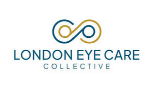

Trade Mark Journal No.2025/041 10 October 2025
UK00004269610 25 September 2025 (9,44)

- Class 9
- Spectacles; Spectacles [glasses]; Lenses for spectacles; Prescription spectacles; Spectacles [optics]; Spectacle glasses; Anti-dazzle spectacles; Spectacles for sports; Frames for spectacles; Anti-glare spectacles; Fashion spectacles; Cases for spectacles and sunglasses; Frames for spectacles and sunglasses; Chains for spectacles and for sunglasses; Chains for spectacles and sunglasses; Protective spectacles; Optical lenses for spectacles; Cords for spectacles; Polarizing spectacles; Chains for spectacles; Cases for spectacles; Parts for spectacles; Safety spectacles; Spectacle lenses; Spectacles for correcting colour blindness; Spectacle temples; Theatre glasses; 3D spectacles for television receivers; Lenses for eyeglasses; Lenses for glasses; Eyeglasses; Glasses; Lorgnettes [opera glasses]; Spectacles for correcting color blindness; Spectacle mountings; Spectacle frames; Opera glasses; Magnifying eyeglasses; Spectacle lens blanks; Optical lenses for eyeglasses; Eye glasses; Sports glasses; Glasses for sports; Eyeglasses for sports; Glasses, sunglasses and contact lenses; Sight glasses [optical]; Magnifying glasses [optics]; Spectacle straps; Lenses for sunglasses; Cases for eyeglasses and sunglasses; Magnifying glasses; Frames for eye glasses; Prescription glasses; Spectacle cords; Prescription eyeglasses; Optical lenses for use with sunglasses; Optical lenses for sunglasses; Optical glasses; Pince-nez; Corrective glasses; Unmounted spectacle frames; Fashion eyeglasses; Spectacle cases; Replacement lenses for glasses; Spectacle nose pads; Spectacle chains; Frames for pince-nez; 3-D glasses; Pince-nez mountings; Frames for eyeglasses; Anti-glare glasses; Spectacle holders; 3D eye glasses; Glasses frames; Frames for glasses; Sunglasses; Prescription sunglasses; Protective eyeglasses; Protective glasses; Sunglass lenses; Chains for eyeglasses; Lorgnette frames; Shooting glasses [optical]; Magnifying lenses; Monocles; Monocle frames; Goggles; Goggles for use in sports; Goggles for sports; Sports goggles; Sports (Goggles for -); Clip-on sunglasses; Cords for eyeglasses; Eyeglass lenses; Spectacle frames made of plastic; Prescription eyewear; Children's eye glasses; Glasses cases; Eyewear; Cases for children's eye glasses; Magnetic clip-on sunglass lenses; Cases for eyeglasses; Virtual reality glasses; Fashion sunglasses; Close-up lenses; Sun glasses; Sports eyewear; Pince-nez chains; Frames for sunglasses; Sunglasses frames; Colour blindness correction glasses; Corrective eyewear; Lenses for telescopes; Spectacle frames made of metal; Pince-nez cords; Lenses for projectors; Optical viewing glasses [peep holes] for doors; Sports training eyeglasses; Cases for pince-nez; Cases (Pince-nez -); Pince-nez cases.
- Class 44
- Optometry; Optometry services; Optometric services; Ophthalmology services; Optician services.
LONDON EYE CARE LIMITED